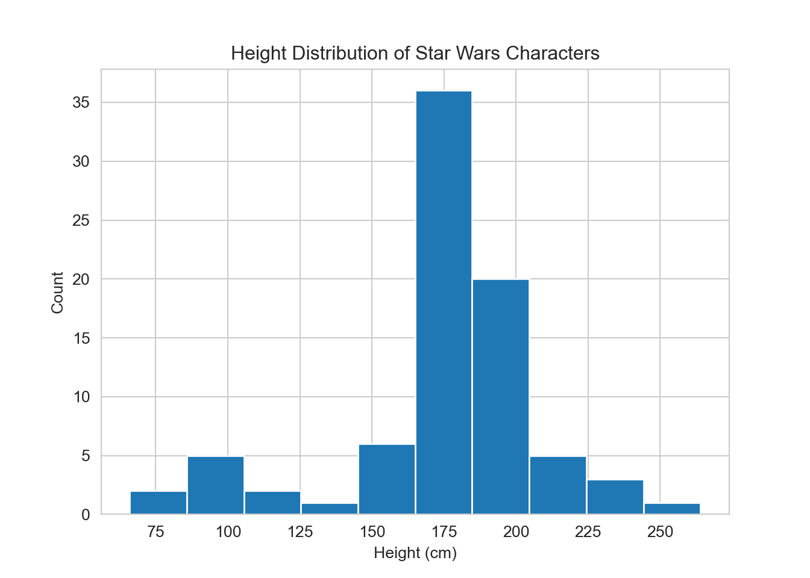
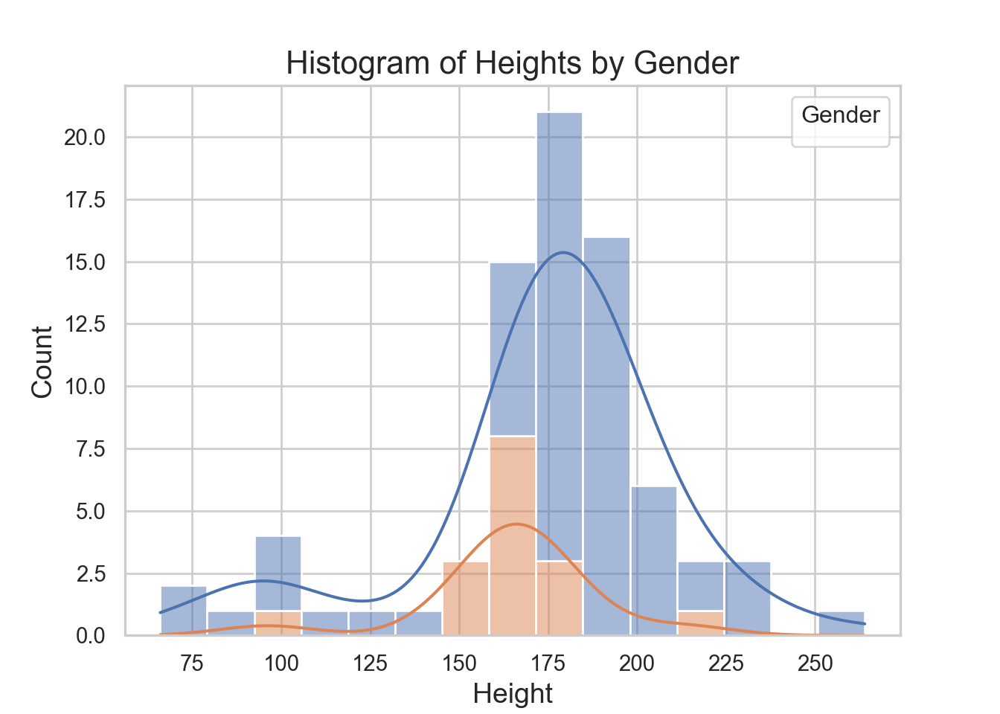
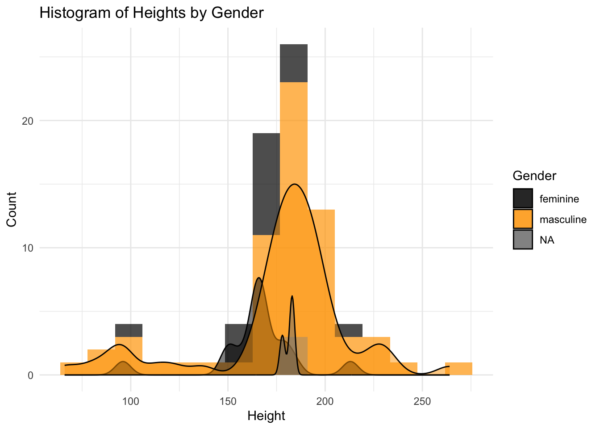

# py_install(c("pandas", "numpy", "scikit-learn",
# "matplotlib", "seaborn", "jupyter"))Lab 1
Lab 1
This course, Statistical Data Science, is written using a combination of R and Python via Quarto. To learn more about Quarto, see https://quarto.org. Throughout the course, you will be provided with code in both R and Python, often either doing the same task in both languages or switching back and forth between languages. Certain tasks are easier to do in Python, while others are easier to do in R.
Overall, you can do work for this course in the framework with which you are most comfortable. If you are very familiar with Jupyter notebooks, you can work in those; they now have the functionality to access R kernels, allowing you to incorporate R code as well.
I personally recommend working in RStudio. I have found it to be the most convenient and accessible framework, allowing me to seamlessly transition between notebooks to scripts and between R and Python programming, even providing a framework for Git and GitHub connection.
As described on Canvas, you can choose to do your work for this course either by installing the software to your personal computer, or by accessing our course JupyterHub. If you want to install the software locally, I provide a rough outline of the process below. Should you run into any problems or errors, feel free to contact myself or the TAs for debugging help.
Installing R
To download and install R, visit r-project.org and click on the link in the first paragraph under Getting Started to “download R”. You will be prompted to choose your preferred CRAN mirror. Scroll down to the “USA” section and choose a mirror; any one will work, although ones that are closer to California (Oregon State University, for example) may work better.
You can download R for whichever OS is installed on your computer – Linux, Mac OS, or Windows. Follow the appropriate link to download an installer of R, then follow the on-screen instructions to complete the installation. Make sure to download and install R 4.4.1 or later.
You should also download and install “RStudio Desktop”. Follow the link and then follow the on-screen instructions.
Installing Python
You can install Python in several different ways. Even if you plan on working with Python primarily through R or RStudio (as I usually do), you need to have an active installation of Python on your computer to do so. Although many people interact with Python through the terminal (particularly when they use Mac OS or Linux), you do not necessarily have to if you are unfamiliar with the terminal.
The two main distributions of Python I recommend are:
Miniconda: Minimal installer; a small bootstrap version of Anaconda that includes
conda(a cross-platform package manager), Python, the packages they both depend on, and a small number of other useful packages. This is sufficient for most people.Anaconda: Full-scale installer; comes with Python,
conda, and a large suite of other pre-installed packages for scientific computing. Large size and will likely use several gigabytes of disk space.
Follow the appropriate link to download an installer of Python, then follow the on-screen instructions to complete the installation. Make sure to download and install Python 3.0 or later.
Next, open RStudio. The package we will use to interface with Python is reticulate. You should install it using install.packages() and call it with library(). After completing initial setup, you can insert Python code chunks into Quarto or Markdown documents the same way you insert R chunks, and run code within those chunks using the same keyboard shortcuts. Running code in a Python chunk will cause RStudio to switch to the reticulate environment automatically. Running code in an R chunk subsequently will cause RStudio to close the reticulate environment.
Once you have Python downloaded and reticulate set up, you can begin using it within RStudio.
Open this file, "lab-1.qmd", in RStudio and look at the following code chunk. Uncomment the line (delete the #) and run the chunk. This is the syntax you use to install Python packages from within R (the equivalent to the conda install terminal prompt). This chunk will most likely take a few minutes to run. If you already have these packages installed, this code will update your package installations.
Note that, using reticulate, both Python and R packages are installed using R. Python packages are installed with py_install(), R packages with install_packages().
You should not need to manually install these packages if you are working in JupyterHub.
To use a Python package, similar to library() in R, we write import. For example, to load the numpy and scikit-learn packages:
import numpy as np
import sklearn as sk
import pandas as pdIt is not required to add the as np or as sk; you can choose to simply write import numpy. However, doing so will mean that any time you use a numpy function, you will have to write out the full name of the package. np is a prefix, a sort of shorthand, for the package name. Most commonly-used Python packages have traditional prefixes; you’ll see them as they come up throughout the course.
Also, note that scikit-learn is called sklearn within Python. The dash - is a special character and you will encounter an error if you try to import scikit-learn rather than sklearn.
Our textbook uses IPython rather than reticulate through RStudio. If you prefer, you can use IPython instead. However, all material for this course is created by me, using reticulate, Anaconda, RStudio, and Quarto, with a combination of R and Python code chunks.
To verify that Python is set up correctly, try running the following code chunk:
def say_hello(name):
print('Hello, {name}.'.format(name=name))
# Try replacing YOUR NAME HERE with your own name:
say_hello("YOUR NAME HERE")Hello, YOUR NAME HERE.Our First Case Study
The following R code chunk loads tidyverse, a suite of packages designed for effectively managing data, and ggplot2, a package for plotting data. We then load a data set from one of the tidyverse packages dplyr, the starwars data set, and look at the first few rows of the data set with head().
library(tidyverse)Warning: package 'tidyr' was built under R version 4.3.2── Attaching core tidyverse packages ──────────────────────── tidyverse 2.0.0 ──
✔ dplyr 1.1.4 ✔ readr 2.1.5
✔ forcats 1.0.0 ✔ stringr 1.5.1
✔ ggplot2 3.4.2 ✔ tibble 3.2.1
✔ lubridate 1.9.3 ✔ tidyr 1.3.1
✔ purrr 1.0.2
── Conflicts ────────────────────────────────────────── tidyverse_conflicts() ──
✖ dplyr::filter() masks stats::filter()
✖ dplyr::lag() masks stats::lag()
ℹ Use the conflicted package (<http://conflicted.r-lib.org/>) to force all conflicts to become errorslibrary(ggplot2)
data("starwars")
head(starwars)# A tibble: 6 × 14
name height mass hair_color skin_color eye_color birth_year sex gender
<chr> <int> <dbl> <chr> <chr> <chr> <dbl> <chr> <chr>
1 Luke Sky… 172 77 blond fair blue 19 male mascu…
2 C-3PO 167 75 <NA> gold yellow 112 none mascu…
3 R2-D2 96 32 <NA> white, bl… red 33 none mascu…
4 Darth Va… 202 136 none white yellow 41.9 male mascu…
5 Leia Org… 150 49 brown light brown 19 fema… femin…
6 Owen Lars 178 120 brown, gr… light blue 52 male mascu…
# ℹ 5 more variables: homeworld <chr>, species <chr>, films <list>,
# vehicles <list>, starships <list>Exercises
How many rows are in
starwars? How many columns?What does the
vehiclesvariable in thestarwarsdata set describe? How do you know?
There are a number of variables in the data set, as shown; we have information about things from character name to character homeworld and the number of films each character was in. We’ll keep things relatively simple for this example and retain a smaller data set with a subset of variables, name, height (height in centimeters), species (name of species), and gender (the gender role or gender identity of the character). Since some characters are missing a height value, we use drop_na() to retain the complete observations.
starwars_smaller <- starwars %>%
select(name, height, species, gender) %>%
drop_na(height)
head(starwars_smaller)# A tibble: 6 × 4
name height species gender
<chr> <int> <chr> <chr>
1 Luke Skywalker 172 Human masculine
2 C-3PO 167 Droid masculine
3 R2-D2 96 Droid masculine
4 Darth Vader 202 Human masculine
5 Leia Organa 150 Human feminine
6 Owen Lars 178 Human masculineLet’s now repeat this operation in Python. Notice that it is very easy to go back and forth from R to Python; we use the r. prefix to refer to any objects from R in Python and the prefix py$ to refer to any objects from Python in R.
starwars_smaller = r.starwars.loc[:,['name', 'height', 'species', 'gender']]
starwars_smaller = starwars_smaller[starwars_smaller['height'] >= 0]
starwars_smaller name height species gender
0 Luke Skywalker 172 Human masculine
1 C-3PO 167 Droid masculine
2 R2-D2 96 Droid masculine
3 Darth Vader 202 Human masculine
4 Leia Organa 150 Human feminine
.. ... ... ... ...
77 Grievous 216 Kaleesh masculine
78 Tarfful 234 Wookiee masculine
79 Raymus Antilles 188 Human masculine
80 Sly Moore 178 None None
81 Tion Medon 206 Pau'an masculine
[81 rows x 4 columns]Exercises
- What do you think the purpose of that second line of that code chunk, with
starwars_smaller['height'], is?
We can look at some summary statistics of Star Wars character heights in R:
summary(starwars_smaller$height) Min. 1st Qu. Median Mean 3rd Qu. Max.
66.0 167.0 180.0 174.6 191.0 264.0 And in Python:
starwars_smaller["height"].describe()count 81.000000
mean 174.604938
std 34.774157
min 66.000000
25% 167.000000
50% 180.000000
75% 191.000000
max 264.000000
Name: height, dtype: float64starwars_smaller.groupby('gender')['height'].describe() count mean std min 25% 50% 75% max
gender
feminine 15.0 166.533333 24.816085 96.0 164.00 167.0 178.0 213.0
masculine 62.0 176.532258 37.646204 66.0 171.25 183.0 193.0 264.0Exercises
- What does the above code chunk show? Can you replicate that code in R?
The following code uses Python to create a histogram of Star Wars character heights:
import matplotlib.pyplot as plt
import seaborn as sns
sns.set_style("whitegrid")
plt.hist(starwars_smaller["height"])
plt.title('Height Distribution of Star Wars Characters')
plt.xlabel('Height (cm)')
plt.ylabel('Count')
It also might be of interest to investigate whether the distribution of height differs across levels of characters’ gender role or gender identity. We can do that in Python:
sns.set(style="whitegrid")
sns.histplot(data=starwars_smaller, x='height', hue='gender',
multiple='stack', bins=15, kde=True)
# Add titles and labels
plt.title('Histogram of Heights by Gender', fontsize=16)
plt.xlabel('Height', fontsize=14)
plt.ylabel('Count', fontsize=14)
plt.legend(title='Gender')
plt.show()
And we can create a very similar plot in R:
starwars_smaller %>%
ggplot(aes(x = height, fill = gender)) +
geom_histogram(bins = 15, alpha = 0.7) +
labs(title = "Histogram of Heights by Gender",
x = "Height",
y = "Count",
fill = "Gender") +
theme_minimal() +
geom_density(aes(y = after_stat(count) * (15 / max(after_stat(count)))), position = "identity", alpha = 0.5) +
scale_fill_manual(values=c("black", "orange"))
Exercises
What do you notice about the distribution of character heights broken down by gender identity?
Can you identify the character(s) in the data set that have a missing value for gender identity? Which characters are they?
Can you determine why the code in R included the density curve and histogram for those characters while the code in Python did not?